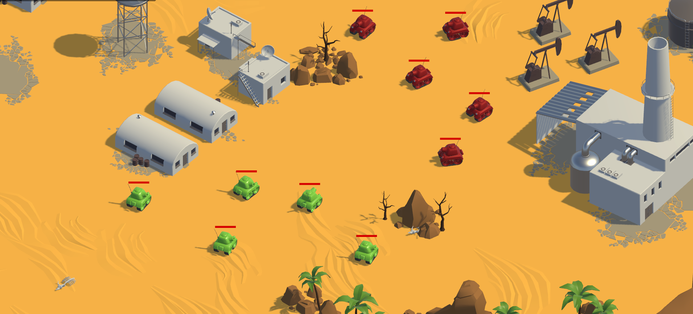

Indra RL Lab 0.0.1 documentation
About
Getting help
Having trouble? We’d like to help!
Try the FAQ – it’s got answers to some common questions.
Report bugs with Scrapy in our issue tracker.
Join the Discord community Indra RL Lab Discord.
Getting Started
Prerequisites Unity, Docker, VS Code and optionally Windows X Server.
Deployment that involves launching and communicating with the Unity simulation.
Training: Overview of how to train the RL agents, including modifying configurations, adding custom models, and running training.
Testing: How to use the
Weights & Biases Logging: Weights & Biases Logging
Use Cases
Use Case 1: Autonomous navigation of a tank in a simulated environment.
Use Case 2: Reaching and shooting a static target.
Developer Guide
Customizing environments: How to customize the Unity environment for training.
Customizing models: How to add custom models and blocks to the RL pipeline.
Training definition: How to define and run training experiments.
Saving and loading models: How to save and load trained models.
Wandb Logging: How to use Weights & Biases for logging and monitoring.
Project Structure
indra-rl-lab (Docker): Overview of the Docker setup for the project, including the RL models, Use Cases and ROS configuration.
Solving specific problems
Frequently Asked Questions: Get answers to most frequently asked questions.